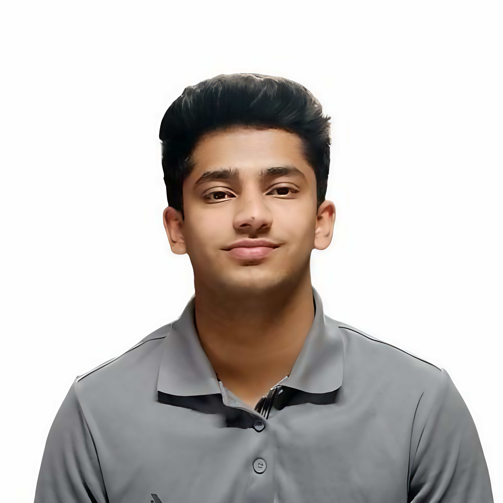
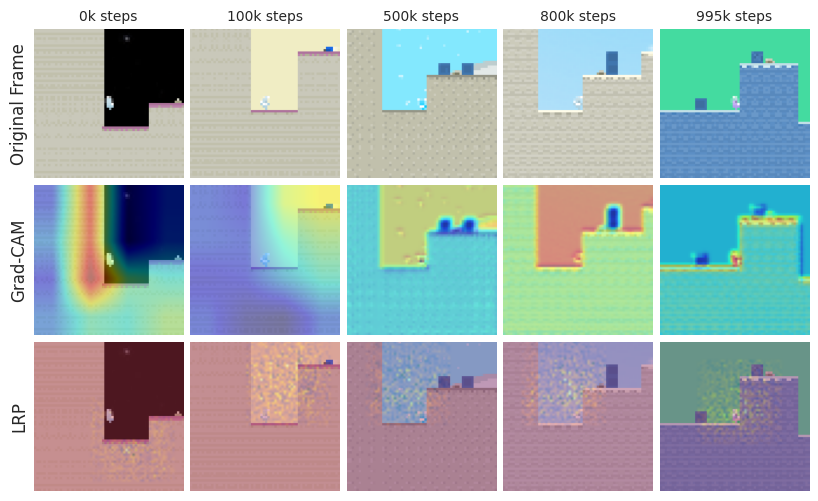

An interpretability framework for unsupervised RL agents, aimed at understanding how intrinsic motivation shapes attention, behavior, and representation learning. Curiosity-driven agents display broader, more dynamic attention and exploratory behavior than their extrinsically motivated counterparts.

Blog format inspired by Simon Boehm.